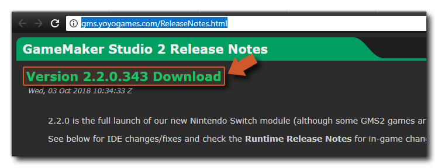

La page Préférences du canal bêta vous permet de choisir de choisir le GameMaker Studio 2 bêta de GameMaker Studio 2. Activer la chaîne bêta signifie qu'il vous sera conseillé de mettre à jour GameMaker Studio 2 lors de la sortie d'une nouvelle version bêta du produit, et pas seulement lorsqu'une mise à jour stable sera disponible. La version bêta du produit est une version candidate à la publication qui est toujours en cours de test. Elle peut donc contenir des bugs pouvant affecter votre projet. Par conséquent, avant d’ GameMaker Studio 2 la GameMaker Studio 2 bêta de GameMaker Studio 2, il est recommandé de sauvegarder votre projet à l’aide d’un contrôle de source, puis de travailler sur une copie / branche distincte de la version bêta.
Avant de pouvoir vous connecter à la chaîne bêta, prenez un moment pour réviser le contrat de licence utilisateur final - en particulier la section 2 -, puis vérifiez les deux options présentées et confirmez que vous connaissez les risques et que vous avez fait votre projet. Une fois coché, vous pouvez cliquer sur le bouton GameMaker Studio 2 la GameMaker Studio 2 bêta de GameMaker Studio 2 qui vous GameMaker Studio 2 à redémarrer GameMaker Studio 2. Lors du redémarrage, vous recevrez les mises à jour du flux du canal bêta (vous devrez peut-être installer une version bêta de l'EDI, le cas échéant).
Une fois que vous avez activé la chaîne bêta, le bouton Préférences affiche désormais l'option Désactiver la GameMaker bêta de GameMaker Studio 2. Lorsque vous cliquez dessus, vous serez invité à accéder aux Notes de publication, où vous pourrez télécharger une version stable de GameMaker Studio 2 (cliquez sur l'en-tête Version de celui que vous souhaitez installer): 
Notez que le canal bêta comprend deux flux: Les flux IDE et Runtime. En optant pour la version bêta ici, vous serez invité à installer l'EDI Bêta, qui téléchargera et installera également toutes les exécutions en version bêta. Cependant, vous pouvez modifier le moteur d'exécution que vous utilisez à tout moment à partir des préférences d'exécution (et même permuter entre les environnements d'exécution bêta et maître).